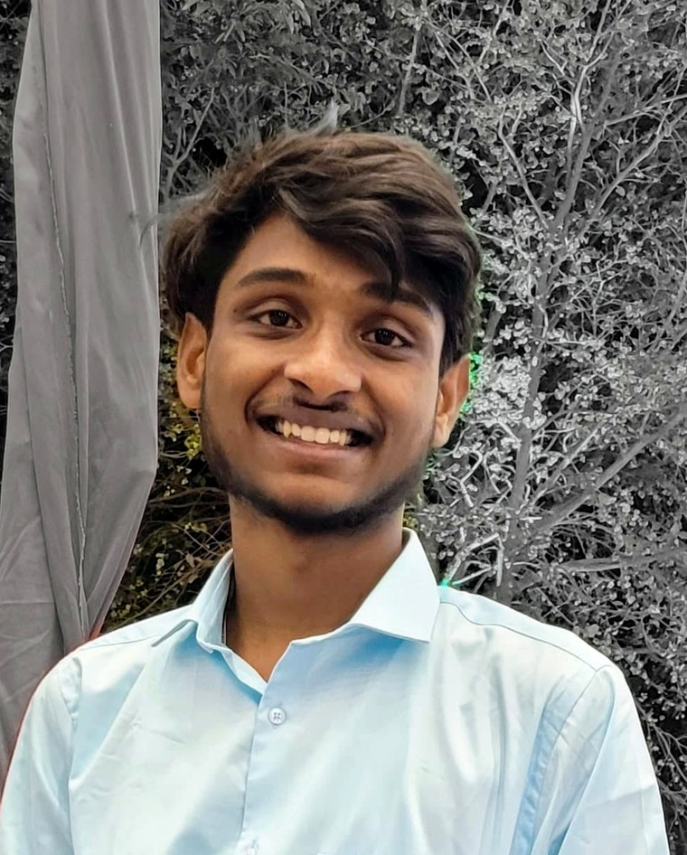

OPEN TO INTERNSHIPS & ENTRY-LEVEL ROLES
Kona Aravind Ranga Reddy builds software that ships, not just compiles.
AI/ML undergraduate in Bangalore who turns coursework into working products — a booked ride, a reported pothole, a running deployment. Two live projects below, both built end to end and both still online.
2live deployed projects
9.27CGPA / 10
4languages supported in CivicConnect

BANGALORE, IN
KARR.
Currently a 3rd-year B.Tech student in Artificial Intelligence and Machine Learning at GITAM, Bangalore, carrying a 9.27 / 10 CGPA. Comfortable across the stack — Python, Java, PHP, JavaScript — with a strong grounding in SQL, DSA, and version control. Most recently completed a GenAI-powered data analytics simulation with Tata via Forage.
WAYPOINT — PROJECTS
Things I've actually deployed
Both projects below are live right now — not screenshots, not localhost.
PERSONAL PROJECT
FlexiRide — Ride-Sharing Platform
- Full-stack web app for posting, searching, and booking shared rides in real time.
- Responsive UI built to simplify the ride-posting and booking workflow end to end.
- Backend matching and booking logic to keep the ride-management flow reliable.
DEPLOYED ON RAILWAY
flexiride.up.railway.app
(opens in new tab)
HACKATHON PROJECT
CivicConnect — Crowdsourced Civic Issue Reporting
- Lets citizens report civic issues — potholes, garbage, streetlight failures — on an interactive map.
- Duplicate reports caught with location-based detection using the Haversine distance formula.
- Built for four languages — English, Telugu, Hindi, Kannada — to reach a wider user base.
- Clean interface for reporting, tracking, and status updates with map-based visualization.
DEPLOYED ON RAILWAY
civicconnect.up.railway.app
(opens in new tab)
WAYPOINT — SKILLS
Toolkit
What I reach for when building.
PROGRAMMING LANGUAGES
PythonJavaC
C++SQLPHP
CORE CS
Data Structures & AlgorithmsDBMS
WEB DEVELOPMENT
HTMLCSSJavaScript
PHPBootstrap
TOOLS & VERSION CONTROL
GitGitHubVS CodeXAMPP
WAYPOINT — EDUCATION
Education & certification
EXP. MAY 2028
B.Tech, Artificial Intelligence & Machine Learning
GITAM (Deemed to be University), Bangalore — 3rd year
CGPA 9.27 / 10
MAY 2025
Diploma, Computer Engineering
Sree Vidyanikethan Engineering College, Tirupati
97.29%
JULY 2026
GenAI Powered Data Analytics Job Simulation
Tata, via Forage — exploratory data analysis, delinquency prediction, and AI-driven collections strategy
DESTINATION
Let's build something that ships.
Open to internships and entry-level roles in Software Engineering, AI/ML, or IT. Reach out directly — I reply fast.